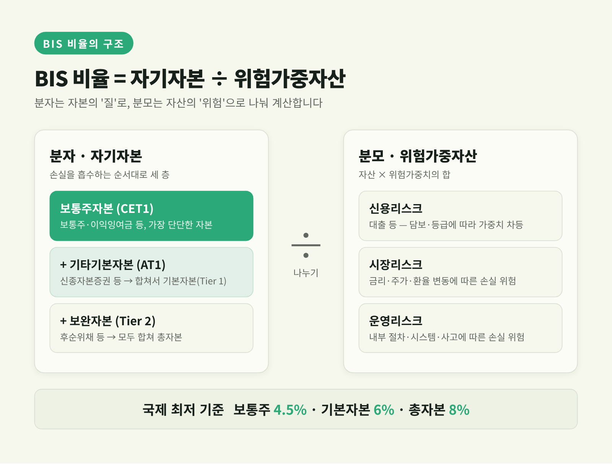
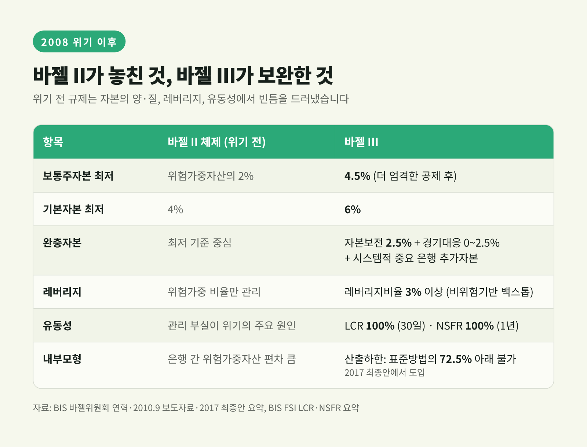
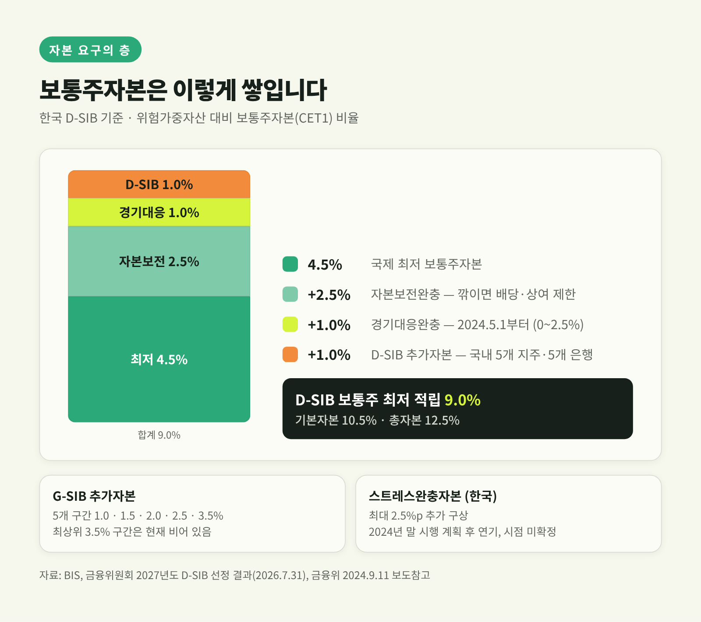
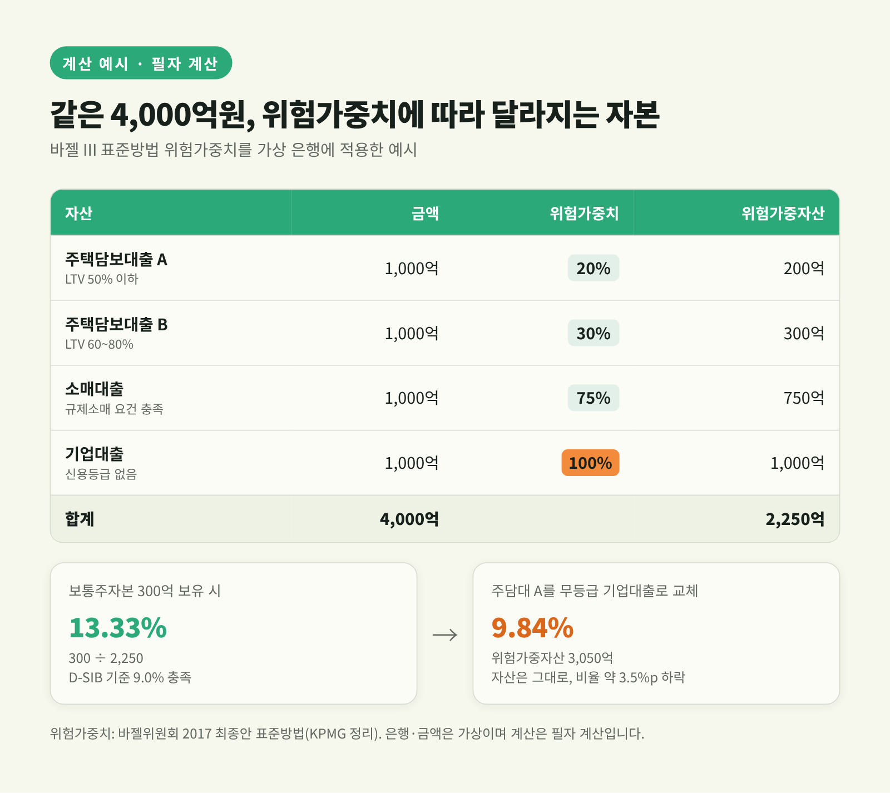
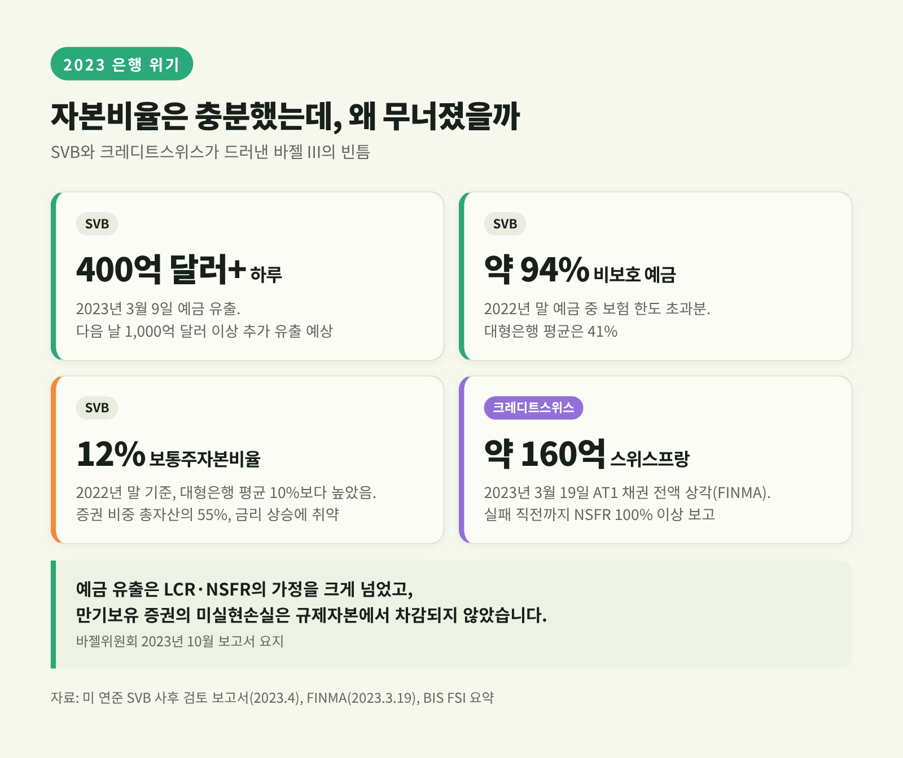
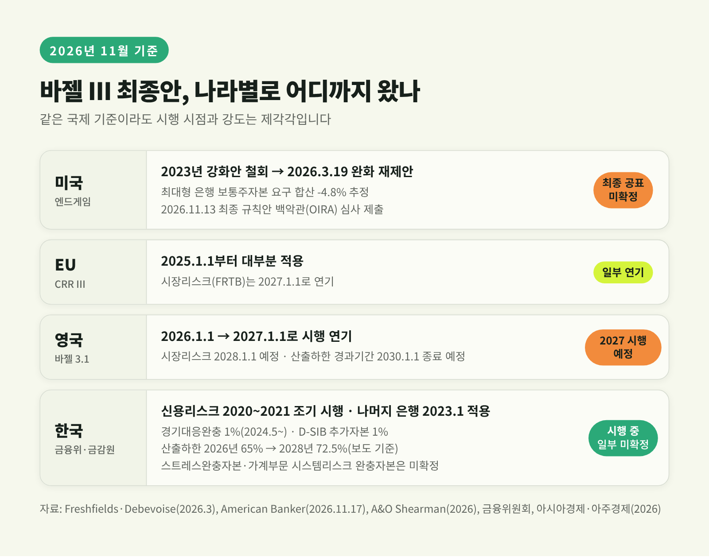

바젤 III 자기자본 규제 원리, BIS 비율 계산과 SVB 이후 논쟁
이번 글에서는 은행 자본 규제의 국제 표준인 바젤 III를 원리부터 정리해 보겠습니다.
BIS 비율을 어떻게 계산하는지, 왜 위험이 큰 대출일수록 자본을 더 쌓아야 하는지를 숫자로 따라가 봅니다.
마지막에는 2023년 SVB·크레디트스위스 사태 이후의 논쟁과 미국·한국의 2026년 현황까지 짚습니다.
먼저 세 줄 요약
- 바젤 III는 은행에 위험가중자산(RWA)의 일정 비율 이상을 자기자본으로 갖추게 합니다. 최저선은 보통주자본 4.5%·기본자본 6%·총자본 8%입니다.
- 그 위에 자본보전완충 2.5%, 경기대응완충 0~2.5%, 시스템적 중요 은행 추가자본이 붙고, 레버리지비율·LCR·NSFR이 따로 받칩니다.
- 한국의 대형 은행(D-SIB)은 2027년에도 보통주자본 9.0% 이상을 유지해야 합니다. 미국은 2023년 강화안을 거둬들이고 완화된 재제안을 최종 확정하는 단계입니다.
■ 은행 자본은 왜 '위험'에 비례해야 할까
은행은 남의 돈으로 장사합니다.
예금과 차입금이 대부분이고, 주주가 넣은 자기자본은 일부에 불과합니다.
대출이 부실해지면 손실을 먼저 떠안는 것이 이 자기자본입니다.
그래서 규제는 이렇게 묻습니다.
"손실이 날 수 있는 자산 대비, 손실을 흡수할 자본이 얼마나 있는가."
이 질문을 국제 기준으로 처음 정리한 것이 1988년 바젤 I입니다.
바젤은행감독위원회(BCBS)는 위험가중자산 대비 자본 최저 8%를 요구했고, 1992년 말까지 완전 이행하도록 했습니다.
2004년 6월에는 바젤 II가 나왔습니다.
최저자본, 감독당국 점검, 공시를 통한 시장규율이라는 세 개의 기둥이 이때 갖춰졌습니다.
핵심 공식은 지금도 같습니다.
BIS 비율 = 자기자본 ÷ 위험가중자산(RWA)
분자의 자기자본은 질에 따라 세 층으로 나뉩니다.
가장 단단한 보통주자본(CET1), 여기에 신종자본증권 같은 기타기본자본(AT1)을 더한 기본자본(Tier 1), 후순위채 등 보완자본(Tier 2)까지 합친 총자본입니다.
분모의 위험가중자산은 자산마다 '위험가중치'를 곱해 더한 값입니다.
같은 100억원이라도 담보가 넉넉한 주택담보대출과 신용등급 없는 기업대출은 다르게 계산됩니다.

■ 2008 금융위기, 바젤 II가 놓친 것
BIS는 바젤위원회 연혁에서 2008년 9월 리먼브러더스 파산 전부터 바젤 II를 근본적으로 강화할 필요가 분명했다고 적고 있습니다.
은행 부문은 "과도한 레버리지와 불충분한 유동성 버퍼"를 안은 채 위기에 들어섰다는 진단입니다.
부실한 지배구조와 리스크 관리, 잘못된 보상 구조, 신용·유동성 위험의 가격 오류, 과도한 신용 팽창도 함께 지목됐습니다.
숫자로 보면 더 분명합니다.
위기 전 국제 최저 보통주자본은 위험가중자산의 2%, 기본자본은 4%였습니다.
바젤 III는 이를 각각 4.5%와 6%로 올렸고, 공제 기준도 더 엄격하게 바꿨습니다.
예전엔 '자본'이라는 이름만 붙으면 손실흡수력이 약한 항목도 상당 부분 인정됐습니다.
지금은 보통주자본이 규제자본의 중심입니다.
바젤 II가 놓친 지점은 크게 네 가지로 정리할 수 있습니다.
- 자본의 양과 질 — 최저선이 낮았고, 실제 위기에서 손실을 흡수하지 못하는 자본이 섞여 있었습니다.
- 레버리지 — 위험가중치가 낮은 자산을 쌓으면 비율은 멀쩡한데 부채는 불어날 수 있었습니다.
- 유동성 — BIS는 2007년 이후 제대로 관리되지 않은 유동성 위험이 대금융위기의 주요 원인이었다고 봅니다. 자본이 있어도 당장 갚을 현금이 없으면 무너집니다.
- 내부모형의 편차 — 은행이 자체 모형으로 위험가중치를 산출하면서, 비슷한 포트폴리오인데도 은행마다 RWA가 크게 달랐습니다. 바젤위원회는 이 편차가 "용납할 수 없을 정도로 넓다"고 평가했습니다.

■ 최저 4.5%·6%·8% 위에 쌓이는 완충자본
바젤 III의 자본 요구는 층층이 쌓는 구조입니다.
| 구분 | 보통주자본(CET1) | 기본자본(Tier 1) | 총자본 |
|---|---|---|---|
| 최저 기준 | 4.5% | 6.0% | 8.0% |
| + 자본보전완충 2.5% | 7.0% | 8.5% | 10.5% |
| + 경기대응완충 | 0~2.5% 추가 | ||
| + 시스템적 중요 은행 | G-SIB 1.0~3.5% / 국가별 D-SIB |
첫째, 자본보전완충 2.5% 입니다.
보통주자본으로만 채워야 합니다.
이 완충이 깎이면 배당, 자사주 매입, 재량 상여금이 자동으로 묶이고, 최저선에 가까울수록 제한이 세집니다.
평소에 쌓아 두었다가 어려울 때 꺼내 쓰라는 뜻입니다.
둘째, 경기대응완충 0~2.5% 입니다.
신용이 과열될 때 당국이 올리고, 침체기에는 풀어 대출이 급격히 끊기지 않게 합니다.
올릴 때는 최대 12개월 전에 예고하고, 내릴 때는 즉시 효력이 납니다.
셋째, 시스템적 중요 은행 추가자본 입니다.
글로벌 시스템적 중요 은행(G-SIB)은 규모, 상호연계성, 대체가능성, 국제 활동, 복잡성 다섯 범주로 점수를 매겨 다섯 개 구간(1.0·1.5·2.0·2.5·3.5%)에 배정됩니다.
가장 높은 3.5% 구간은 현재 비어 있습니다.
금융안정위원회(FSB)의 2025년 목록에는 29개 은행이 올랐고, 2차 자료에 따르면 JP모건이 2.5% 구간에 있습니다.
각국은 국내 시스템적 중요 은행(D-SIB)에도 별도 추가자본을 부과합니다.

■ 자본비율만으로는 부족하다 — 레버리지비율·LCR·NSFR
위험가중치는 결국 추정입니다.
추정이 틀리면 자본비율도 틀립니다.
그래서 바젤 III는 위험가중을 하지 않는 보조 장치를 함께 둡니다.
레버리지비율은 기본자본을 위험가중 없는 전체 익스포저로 나눕니다.
최저 3%를 항상 지켜야 합니다.
BIS는 목적을 두 가지로 밝힙니다. 은행권의 레버리지 누적을 막는 것, 그리고 위험기반 규제를 받치는 단순한 '백스톱'이 되는 것입니다.
G-SIB는 위험기반 추가자본의 50%만큼 레버리지 버퍼를 더 쌓습니다. 2% 구간 은행이라면 레버리지비율 최소 4%가 되는 셈입니다.
LCR(유동성커버리지비율) 은 30일간의 스트레스 상황에서 빠져나갈 순현금유출 이상으로 고유동성자산(HQLA)을 쥐고 있으라는 규제입니다.
2015년 60%에서 매년 10%포인트씩 올려 2019년 100%가 됐습니다.
NSFR(순안정자금조달비율) 은 시계를 1년으로 늘립니다.
1년 넘게 머물 안정적인 자금이, 자산이 요구하는 안정자금 이상이어야 합니다. 2018년부터 최소 100% 기준이 적용됐습니다.
정리하면 자본비율은 '손실을 견디는 힘', 레버리지비율은 '부채의 절대 크기', LCR·NSFR은 '당장과 1년 뒤의 현금'을 봅니다.
■ 위험가중치로 직접 계산해 보기
2017년 바젤 III 최종안의 표준방법은 위험가중치를 더 잘게 나눴습니다.
일반 주택담보대출은 담보인정비율(LTV)에 따라 달라집니다.
LTV 50% 이하 20%, 50~60% 25%, 60~80% 30%, 80~90% 40%, 90~100% 50%, 100% 초과는 70%입니다.
기업대출은 신용등급이 없으면 100%, 중소기업(연매출 5천만 유로 이하)은 85%, 규제 요건을 갖춘 소매대출은 75%입니다.
가상의 은행 하나로 계산해 보겠습니다. 아래는 원리 설명을 위한 필자 계산입니다.
| 자산 | 금액 | 위험가중치 | 위험가중자산 |
|---|---|---|---|
| 주택담보대출 A (LTV 50% 이하) | 1,000억원 | 20% | 200억원 |
| 주택담보대출 B (LTV 60~80%) | 1,000억원 | 30% | 300억원 |
| 소매대출 (규제소매) | 1,000억원 | 75% | 750억원 |
| 무등급 기업대출 | 1,000억원 | 100% | 1,000억원 |
| 합계 | 4,000억원 | 2,250억원 |
자산은 4,000억원인데 위험가중자산은 2,250억원입니다.
이 은행이 한국의 D-SIB라면 보통주자본 9.0%, 곧 202.5억원 이상이 필요합니다.
총자본 기준 12.5%라면 약 281억원입니다.
보통주자본 300억원, 기타기본자본 30억원, 보완자본 40억원을 갖고 있다고 해 보겠습니다.
보통주자본비율 13.33%, 기본자본비율 14.67%, 총자본비율 16.44%가 나옵니다.
익스포저를 대출 총액으로 단순화하면 레버리지비율은 330억 ÷ 4,000억, 8.25%입니다.
여기서 주택담보대출 A 1,000억원을 무등급 기업대출로 바꿔 보겠습니다.
위험가중자산은 2,250억원에서 3,050억원으로 늘고, 보통주자본비율은 9.84%로 떨어집니다.
자산 규모는 그대로인데 비율이 3.5%포인트 가까이 내려갑니다.
은행이 기업대출보다 담보대출을 선호한다는 말이 나오는 배경이 이 계산에 있습니다.
같은 이유로 내부모형을 쓰는 은행에는 산출하한(output floor) 이 걸립니다.
내부모형으로 계산한 RWA가 표준방법 RWA의 72.5% 아래로 내려가지 못하게 하는 장치입니다. 바젤위원회 일정은 2022년 50%에서 2027년 72.5%로 올리는 것입니다.

■ 2023년 SVB·크레디트스위스가 남긴 질문
2023년 3월은 바젤 III가 만능이 아니라는 사실을 드러냈습니다.
미국 연준의 사후 보고서에 따르면 실리콘밸리은행(SVB)은 3월 9일 하루에 400억 달러 이상의 예금을 잃었습니다.
다음 날에는 1,000억 달러 이상이 더 빠져나갈 것으로 예상됐습니다.
2022년 말 예금의 약 94%가 예금보험 한도를 넘는 비보호 예금이었고, 증권이 총자산의 55%를 차지했습니다.
만기보유 증권의 가중평균 듀레이션은 6.2년이었습니다. 금리가 오르자 장부 밖 손실이 커졌습니다.
눈여겨볼 대목이 있습니다.
같은 보고서에서 SVB의 2022년 말 보통주자본비율은 12%로, 대형은행 평균 10%보다 2%포인트 높았습니다.
자본비율이 높았는데도 무너진 것입니다.
크레디트스위스는 신뢰 위기로 고객 자금이 대거 이탈했습니다.
스위스 금융감독청(FINMA)은 2023년 3월 19일, 정부 특별지원과 함께 약 160억 스위스프랑 규모의 AT1 채권 전액 상각을 발표했습니다.
'자본'으로 분류되던 증권이 하루아침에 0이 된 셈입니다.
바젤위원회는 2023년 10월 보고서에서 쟁점을 이렇게 정리했습니다.
- 실제 예금 유출이 LCR·NSFR이 가정한 수준을 크게 넘었습니다. 크레디트스위스는 실패 직전까지 NSFR 100% 이상을 보고했습니다.
- 만기보유 증권의 미실현손실은 규제자본에서 차감되지 않았고, 미국 지역은행 3곳은 은행계정 금리리스크 기준의 적용 대상도 아니었습니다.
- AT1의 손실흡수 순서가 투자자에게 충분히 투명했는지 의문이 남았습니다.
- 규칙만으로는 한계가 있으니 감독당국의 조기 개입이 필요하다는 점도 강조했습니다.
연준 보고서는 은행 규모별로 규제를 차등 완화한 '테일러링'이 기준을 낮추고 감독을 방해했다고 스스로 인정했습니다.
바젤위원회 역시 무너진 은행들의 공통점으로 사업전략·지배구조·리스크 관리의 취약을 먼저 꼽았습니다. 숫자 기준만큼이나 경영과 감독이 중요했다는 뜻입니다.

■ 미국 '바젤 III 엔드게임', 강화에서 완화로
미국은 2017년 최종안을 '바젤 III 엔드게임'이라고 부릅니다.
2023년 7월 원안은 강화 쪽이었습니다.
총자산 1,000억 달러 이상 은행이 대상이었고, FDIC는 영향받는 은행지주회사의 보통주자본 요구가 합계 16% 늘어날 것으로 추정했습니다.
SVB의 교훈을 반영해 매도가능증권의 미실현손익(AOCI)을 자본비율에 반영하도록 한 것도 이 안이었습니다.
방향은 2026년에 바뀌었습니다.
연준·FDIC·OCC는 2026년 3월 19일 2023년 안을 공식 철회하고 재제안을 내놓았습니다.
연준 이사회 표결은 6대 1이었고, 마이클 바 이사가 반대했습니다.
재제안의 숫자는 이렇습니다.
- 엔드게임안 단독으로는 대형 지주회사 보통주자본 요구 +1.4%
- G-SIB 추가자본과 스트레스테스트 변경까지 합치면 최대형 은행 그룹 -4.8%
- 중견 은행 그룹 -5.2%, 소형 은행 -7.8%
- G-SIB 추가자본은 평균 약 40bp, 총 약 230억 달러 감소
당국은 시스템 전체 자본이 "소폭 감소"하지만 위기 전보다는 여전히 크게 높다고 설명합니다.
의견수렴은 2026년 6월 18일 마감됐습니다.
2026년 11월 13일에는 FDIC가 수정된 공동 자본규칙을 백악관 정보규제국(OIRA)에 제출했습니다. 연방관보 게재 전 마지막 단계입니다.
다만 최종 내용, 공표일, 시행일은 이 글을 쓰는 시점에 확정되지 않았습니다.
다른 주요국도 일정이 밀렸습니다.
유럽연합은 2025년 1월부터 대부분을 시행했지만 시장리스크 기준은 2027년으로 미뤘습니다.
영국은 전체 시행을 2027년 1월로 연기했습니다.
■ 한국은 어디까지 왔나 — 금융위·금감원 현황
한국은 바젤 III 최종안의 신용리스크 부분을 앞당겨 도입했습니다.
금융위원회는 2020년 6월 은행 15곳과 은행지주 8곳의 조기 시행을 승인했고, 나머지는 2023년 1월부터 적용했습니다.
당시 자체 추정으로 은행의 BIS 비율이 평균 1.91%포인트 올라가는 효과가 있었습니다.
완충자본도 차례로 채워졌습니다.
경기대응완충자본은 2016년 도입 후 0%였다가 2024년 5월 1일부터 1%가 부과되고 있습니다.
D-SIB로는 2027년에도 신한·KB·하나·우리·농협 5개 지주와 그 은행 5곳이 선정됐습니다(2026년 7월 31일 금융위 의결).
| 구분 | 최저 | 자본보전 | 경기대응 | D-SIB | 합계(D-SIB) |
|---|---|---|---|---|---|
| 보통주자본비율 | 4.5% | 2.5% | 1.0% | 1.0% | 9.0% |
| 기본자본비율 | 6.0% | 2.5% | 1.0% | 1.0% | 10.5% |
| 총자본비율 | 8.0% | 2.5% | 1.0% | 1.0% | 12.5% |
D-SIB가 아닌 은행은 보통주 8.0%, 기본자본 9.5%, 총자본 11.5%가 기준입니다.
실제 비율은 이 기준을 크게 웃돕니다.
금감원 잠정 집계로 2026년 6월 말 국내은행 총자본비율은 15.77%, 기본자본비율 14.84%, 보통주자본비율 13.62%, 단순기본자본비율(레버리지비율)은 6.59%였습니다.
2025년 말에는 결산배당과 환율 상승에 따른 외화대출 위험가중자산 증가로 보통주자본비율이 13.51%까지 내려가기도 했습니다.
바젤위원회의 레버리지비율 이행 평가에서는 최고 등급인 '준수(Compliant)'를 받았습니다.
남은 과제는 아직 진행형입니다.
- 스트레스완충자본 — 위기상황분석 결과에 따라 최대 2.5%포인트를 더 쌓게 하는 제도입니다. 2024년 말 시행을 계획했지만 환율 급등으로 미뤄졌고, 2026년 7월 보도 기준 감독규정에 반영되지 않은 채 도입 시점이 정해지지 않았습니다.
- 산출하한 — 국내 일정은 2026년 65%, 2027년 70%, 2028년 72.5%로 보도됐습니다. 은행권은 무등급 중소기업 대출이 위축될 수 있다며 예외를 요청하고 있습니다.
- 주택담보대출 자본 규제 — 내부모형 은행의 신규 주담대 위험가중치 하한이 2026년 1월 15%에서 20%로 올랐습니다. 은행별 0~1%의 가계부문 시스템리스크 완충자본은 2027년 도입을 목표로 협의 중이며, 아직 확정되지 않았습니다.

정리하면 이렇습니다.
바젤 III의 원리는 단순합니다.
위험한 자산을 많이 가질수록 손실을 흡수할 자본을 더 쌓으라는 것입니다.
여기에 레버리지와 유동성이라는 두 개의 안전판을 더했습니다.
한계도 분명합니다.
위험가중치는 추정이고, SVB는 자본비율 12%로도 무너졌습니다.
자본 규제가 강할수록 대출이 위축된다는 반론도 꾸준합니다. 미국의 완화와 한국 은행권의 산출하한 유예 요청이 그 흐름 위에 있습니다.
"자본비율은 은행 건전성의 출발점이지, 결론이 아니다."
다음에 은행의 BIS 비율 기사를 보신다면 분모의 위험가중자산이 어떻게 계산됐는지, 그리고 유동성은 어떤지 함께 살펴보시길 권합니다.
숫자 하나보다 그 숫자가 만들어진 과정이 더 많은 것을 말해 줄 것입니다.
※ 이 글은 제도 설명을 위한 것으로 특정 금융회사나 금융상품에 대한 투자 권유가 아닙니다.
참고자료
- BIS, History of the Basel Committee — https://www.bis.org/bcbs/history.htm
- BIS, Group of Governors and Heads of Supervision announces higher global minimum capital standards (2010.9.12) — https://www.bis.org/press/p100912.htm
- BIS, Calibration of the Capital Framework, Annex (2010.9) — https://www.bis.org/press/p100912a.pdf
- BIS FSI, The capital buffers in Basel III — https://www.bis.org/fsi/fsisummaries/b3_capital.htm
- BIS, High-level summary of Basel III reforms (2017.12) — https://www.bis.org/bcbs/publ/d424_inbrief.pdf
- BIS Basel Framework, Leverage ratio (LEV) — https://www.bis.org/committees/bcbs/basel-framework/standard/lev?allChapters=true
- BIS FSI, Liquidity Coverage Ratio — https://bis.org/fsi/fsisummaries/lcr.htm
- BIS FSI, Net Stable Funding Ratio — https://www.bis.org/fsi/fsisummaries/nsfr.htm
- BIS FSI, The G-SIB framework — https://bis.org/fsi/fsisummaries/g-sib_framework.htm
- BIS FSI, Lessons from the 2023 banking turmoil — https://www.bis.org/fsi/fsisummaries/exsum_23912.htm
- BIS, Basel III Monitoring Report (2026.9) — https://www.bis.org/publications/202609-qis-basel-iii-monitoring-report.pdf
- FSB, 2025 list of global systemically important banks (2025.11.27) — https://www.fsb.org/2025/11/2025-list-of-global-systemically-important-banks-g-sibs/
- KPMG, Basel Committee finalises standards, Annex (2017.12) — https://assets.kpmg.com/content/dam/kpmg/xx/pdf/2017/12/basel-committee-finalises-standards-annex.pdf
- Federal Reserve, Review of the Federal Reserve's Supervision and Regulation of Silicon Valley Bank (2023.4) — https://www.federalreserve.gov/publications/2023-april-svb-executive-summary.htm
- Federal Reserve, Evolution of Silicon Valley Bank (2023.4) — https://federalreserve.gov/publications/2023-April-SVB-Evolution-of-Silicon-Valley-Bank.htm
- FDIC, Capital Requirements for Large Banks fact sheet (2023.7.27) — https://www.fdic.gov/news/fact-sheets/capital-requirements-for-large-banks-7-27-23.html
- FINMA, Credit Suisse/UBS 보도자료 (2023.3.19) — https://www.finma.ch/en/news/2023/03/20230319-mm-cs-ubs/
- Freshfields, Basel III Endgame, Take Two (2026.3) — https://www.freshfields.com/en/our-thinking/blogs/a-fresh-take/basel-iii-endgame-take-two-8-key-takeaways-from-the-federal-banking-agencies-c-102mnm3
- Debevoise & Plimpton, Federal Banking Agencies' Basel III Endgame Mulligan (2026.3.20) — https://www.debevoise.com/insights/publications/2026/03/federal-banking-agencies-basel-iii-endgame-mullig
- American Banker, Bank capital rules inch closer to finalization (2026.11.17) — https://www.americanbanker.com/news/bank-capital-rules-inch-closer-to-finalization
- A&O Shearman, Prudential regulation in 2026 — https://www.aoshearman.com/en/insights/financial-services-horizon-report-2026/prudential-regulation-in-2026
- 금융위원회, 2027년도 금융체계상 중요한 은행·은행지주회사 선정 결과 (2026.7.31) — https://www.fsc.go.kr/po010105/87451
- 금융위원회, 은행권 스트레스완충자본 도입 추진 (2024.9.11) — https://fsc.go.kr/po010101/83062
- 금융위원회, 바젤Ⅲ 최종안 조기 시행 (2020.6.28) — https://www.fsc.go.kr/no010101/74410
- 금융감독원, 2026년 6월말 국내은행 BIS기준 자본비율 현황(잠정) (2026.8.31, KDI 경제정보센터 게재) — https://eiec.kdi.re.kr/policy/materialView.do?num=286063
- 금융감독원, 바젤위원회 단순기본자본비율 규제이행평가 결과 (2026.10.14) — https://eiec.kdi.re.kr/policy/materialView.do?num=288086
- 뉴스토마토, 금융위, 생산적·포용금융 압박에 은행 자본규제 강화는 뒷전 (2026.7.3) — https://newstomato.com/ReadNews.aspx?no=1306068
- 아시아경제, 은행권 "자본하한 규제에 자본 수십조 더 쌓아야" (2026.6.1) — https://view.asiae.co.kr/article/2026060107180897571
- 아주경제, 주담대 위험가중치 또 올리나 (2026.10.12) — https://www.ajunews.com/view/20261012145415873